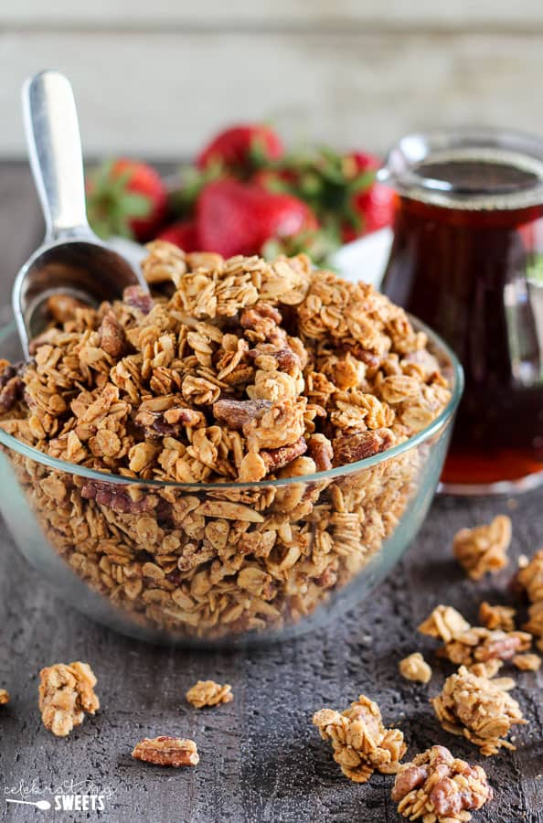

Crunchy Maple Granola

Description
This recipe is a family favorite for weekday breakfasts. It's incredibly simple to make and allows for customization to suit your preferences. Feel free to experiment with different nut and seed combinations, spices, or even substitute honey for maple syrup.
Egg whites are used to create crunchy oat clusters, but the recipe remains delicious and crunchy even if omitted for a vegan option.
The baked oatmeal bars stay fresh for at least 3 weeks when stored in a tightly sealed glass container like a Mason jar. Enjoy!
Ingredients
- 2 cups rolled oats (old-fashioned type)
- 1/2 cup chopped pecans or walnuts (or nut of your choice)
- 1/4 cup sunflower seeds
- 1/2 teaspoon cinnamon
- 1/2 teaspoon salt
- 1/4 cup maple syrup
- 1 teaspoon vanilla extract
- 2 egg whiltes (optional)
Directions
- Preheat oven to 325 degrees.
- In a bowl, combine all dry ingredients (rolled oats, pecans or walnuts, sunflower seeds, cinnamon, salt).
- Add wet ingredients (maple syrup, vanilla, and egg whites) and stir to coat dry ingredients.
- Spread evenly on a baking sheet and bake for 35 minutes, stirring every 10 to 12 minutes.
- Cool on a rack and transfer to a sealed glass container (will last for at least 3 to 4 weeks).
- Enjoy!